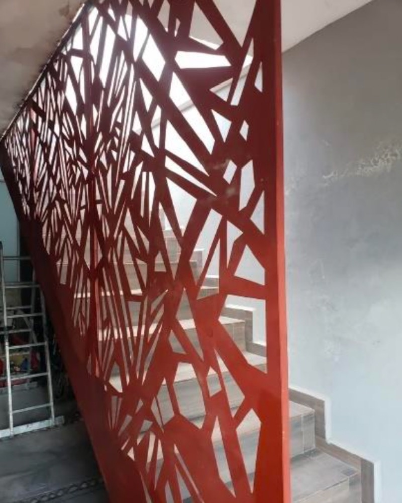
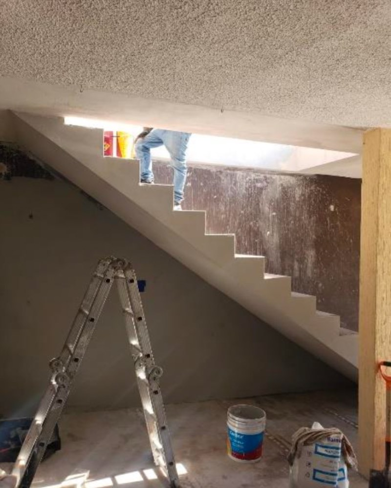
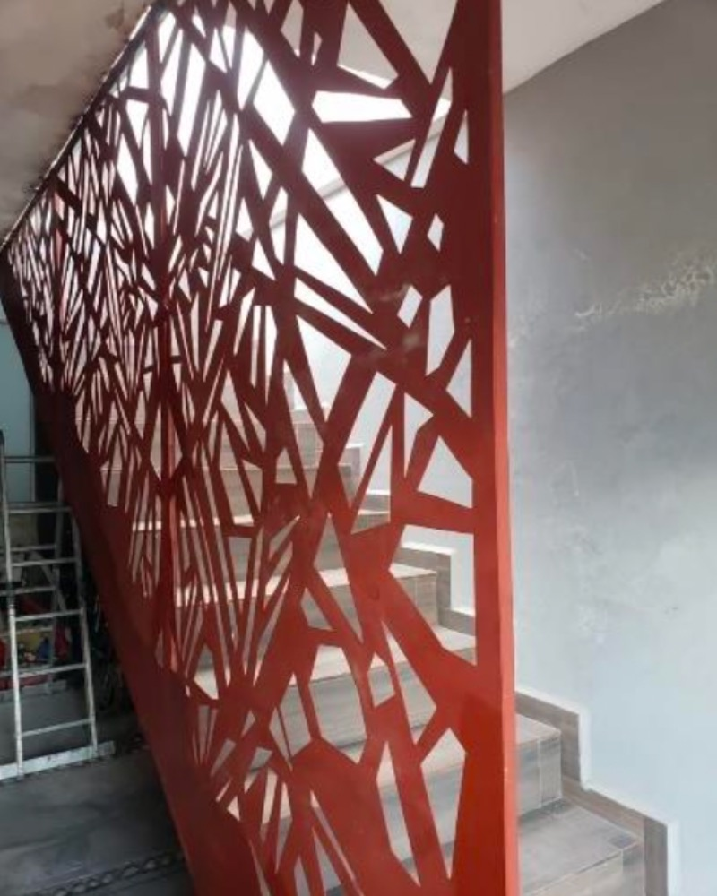
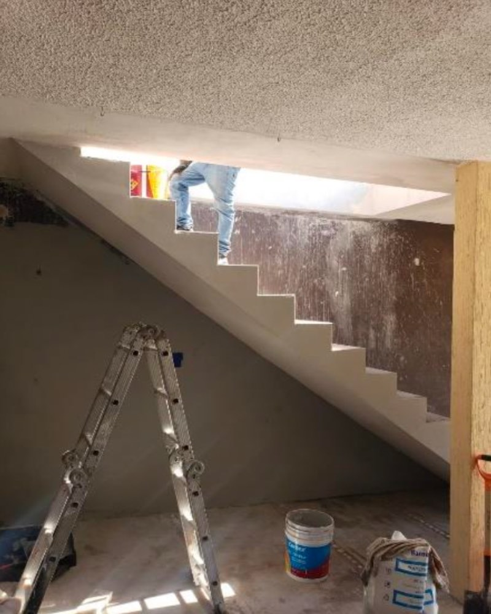

Proyectos
Proyecto: Desarrollo de Subdivisiones en Texas nombrada Texas of Lakes of Champions Estates Subdivision.
Resumen del proyecto: Completó una revisión exhaustiva de los planos de subdivisión y aprobó los planos que condujeron a la construcción de la subdivisión. Esto incluyó varias reuniones con los ingenieros desarrolladores, la realización de un análisis hidrológico completo del paisaje para evitar inundaciones y la realización de una inspección final del sitio de subdivisión.
Proyecto: Proyecto de Construcción Residencial.
Resumen del proyecto: Un proyecto realizado en Saltillo Coahuila el cual fue realizado con éxito y calidad de primera. Así dejamos un cliente mas satisfecho con nuestro producto el cual es garantizado y hecho con los mejores materiales para así asegurar un óptimo beneficio y máxima seguridad.
Proyecto: Departamento de Transporte de Pensilvania (PennDOT) Implementación de infraestructura vial nueva e innovadora.
Resumen del proyecto: Sana Moran fue ingeniero principal de este proyecto en el que dirigió con éxito numerosas fases para proporcionar al estado de Pensilvania casi cincuenta (50) barreras de seguridad en las carreteras y otra infraestructura vial en uso en todo el estado de Pensilvania y varios otros estados. El Sr. Skinner brindó apoyo analítico y de escritura esencial que ayudó a diseñar numerosas barreras y otros productos de seguridad vial. A continuación se muestran imágenes de una de las fases más grandes de este proyecto para desarrollar una porción a pequeña escala de un puente y junto con la implementación de esta infraestructura.
Proyecto: Proyecto de Construcción de Estacionamiento.
Resumen del proyecto: Vertió 3 estacionamientos de concreto para el Palacio de Justicia y la Cárcel del Condado de Chambers, repavimentó el estacionamiento existente con un sellador y volvió a pintar el estacionamiento existente. Este proyecto incluyó la remoción y nivelación del suelo existente, la estabilización del sitio, la supervisión de los contratistas que instalaron el estacionamiento de concreto, la inspección del estacionamiento de concreto y el diseño de las ubicaciones de los lugares de estacionamiento de acuerdo con los de diseño de estándares estacionamientos de Texas.
Proyecto: Evaluación del sistema de carreteras del Departamento de Transporte de Texas.
Resumen del proyecto: El Sr. Moran y el Sr. Skinner formaron parte del equipo de ingeniería para desarrollar una infraestructura vial mejorada para el estado de Texas. El Sr. Moran dirigió con éxito numerosas fases de este proyecto para proporcionar a TxDOT una infraestructura vial que cumpla con las normas de seguridad más recientes. Todas las barreras y otra infraestructura diseñada por el Sr. Moran pasaron con éxito todos los criterios de prueba requeridos. El Sr. Moran y el Sr. Skinner diseñaron, analizaron y luego supervisaron la construcción y luego las pruebas de 38 tipos diferentes de infraestructura vial como parte de este proyecto. Estos productos están actualmente en uso en todo el estado de Texas y en otros lugares de los Estados Unidos y Europa.
Proyecto: Fresado y Repavimentación de Carreteras. Instalación de Tablestacas.
Resumen del proyecto: Se fresaron y pavimentaron 400 metros de asfalto y se instalaron 3 tablestacas para reducir la erosión alrededor del puente. Este proyecto incluyó cálculos de Geotech para determinar la resistencia requerida de las tablestacas, preparación del camino, desvío de los viajeros, supervisión de los contratistas que instalaron la nueva superficie e inspección de la carretera y las tablestacas terminadas.
Proyecto: Proyecto de construcción de ladrillos
Resumen del proyecto: Se construyó un edificio para almacenar material con fines residenciales.
Proyecto: Proyecto para Construir Oficinas.
Resumen del proyecto: Proyecto de unas escaleras para oficinas. Se construyeron escaleras para una oficina que medía varios pisos de altura. El proyecto se completó con éxito sin retrasos y dentro del presupuesto.
 



Proyecto: Realineación y Diseño de Carretera .
Resumen del proyecto: Realineación de una carretera existente en Baytown Texas. Mi equipo y yo diseñamos 2 km de un nuevo camino asfaltado y sistemas de drenaje. Este proyecto incluyó cálculos de hidrología, cálculos de diseño de caminos, dibujo por computadora, topografía, supervisión de contratistas que instalaron el nuevo camino y zanjas, e inspeccionaron el camino terminado.